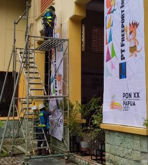
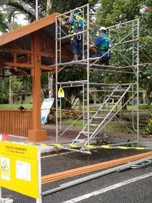
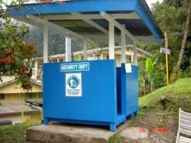
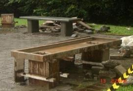
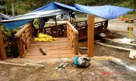
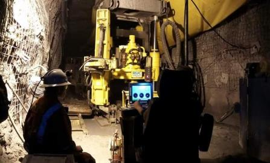
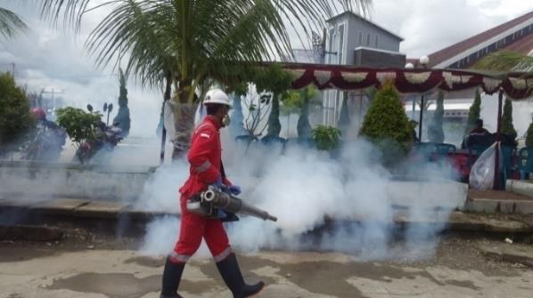
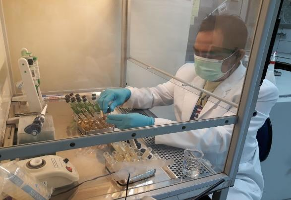
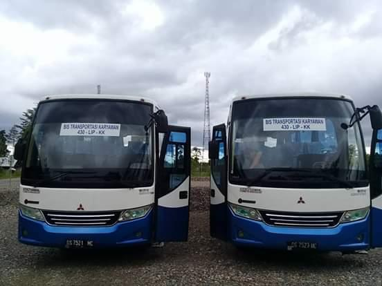
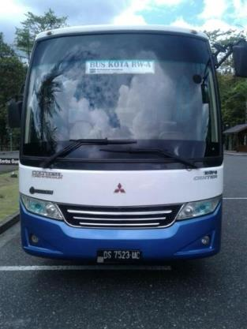

Pengalaman
Rekam Jejak
Rekam Jejak
Proyek Kami
Order pekerjaan dari sejumlah perusahaan swasta dan pemerintah lokal — dikerjakan oleh manajemen dan karyawan yang terlatih dan berpengalaman.













List Project — Contractor
Daftar Proyek
Periode 2005 – 2025
| No | Pekerjaan | Lokasi | Uraian | Pemilik Proyek |
|---|---|---|---|---|
| 01 | Pekerjaan Konstruksi | Bandara Timika | Pembangunan ruang tunggu dan keberangkatan airport | Bandara Internasional Mozes Kilangin |
| 02 | Pekerjaan Konstruksi | SLD | Pembuatan tempat parkir | PT. Freeport Indonesia |
| 03 | Pekerjaan Konstruksi | Distrik Mimika Baru | Sarana & prasarana rumah sederhana | Dinas Pemukiman |
| 04 | Peningkatan Jalan Lapen | Distrik Mimika Baru | Peningkatan jalan | Dinas PU |
| 05 | Painting & Scaffolding | Hotel Sheraton | Pengecatan bagian luar | PT. Freeport Indonesia |
| 06 | Pekerjaan Konstruksi | Distrik Mimika Baru | Sarana & prasarana rumah sederhana | Dinas Pemukiman |
| 07 | Peningkatan Jalan Lapen | Distrik Mimika Baru | Peningkatan jalan | Dinas PU |
| 08 | Peningkatan Jalan SP I – GSI (Lapen) | Distrik Mimika Baru | Peningkatan jalan | Dinas PU |
| 09 | Painting & Scaffolding | Lowland | Painting, carpenter, plumbing & maintenance | PT. Freeport Indonesia |
| 10 | Painting & Scaffolding | Highland | Painting, carpenter, scaffold & maintenance | PT. Freeport Indonesia |
| 11 | Painting & Scaffolding | Highland | Pengecatan & penyediaan alat perancah untuk PJP wilayah dataran tinggi & rendah | PT. Freeport Indonesia |
| 12 | Painting & Scaffolding | Lowland | FM Carpenter, Scaffolding & Maintenance RPH | PT. Freeport Indonesia |
| 13 | Supply of Labor Services | Lowland | Labor Services IPHMC / menyediakan karyawan | PT. Freeport Indonesia |
| 14 | Supply of Labor Services | Highland | Labor Services RUC / menyediakan karyawan | PT. RUC Cementation Indonesia |
| 15 | Transportasi | Lowland | Bus transport / rental | PT. Freeport Indonesia |
| 16 | Supply of Labor Services | Lowland | Unit bus transport Twall | PT. Freeport Indonesia |
| 17 | Supply of Labor Services | Lowland | DWP | PT. Freeport Indonesia |
| 18 | Unit Rental | Lowland | Rental unit / bus anak sekolah | Yayasan Pendidikan Jayawijaya / PT. Freeport Indonesia |
| 19 | Supply of Labor Services & Unit Rental | Lowland | Labor services & unit rental | PT. Sandvik SMC |
| 20 | Supply of Labor Services | Highland – Lowland | Facilities Management | PT. Freeport Indonesia |
Kerja sama dengan
PT. Probesco Disatama
Kerja sama dengan
LNG Genting Oil